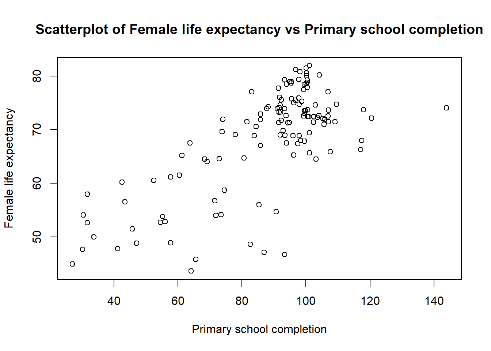
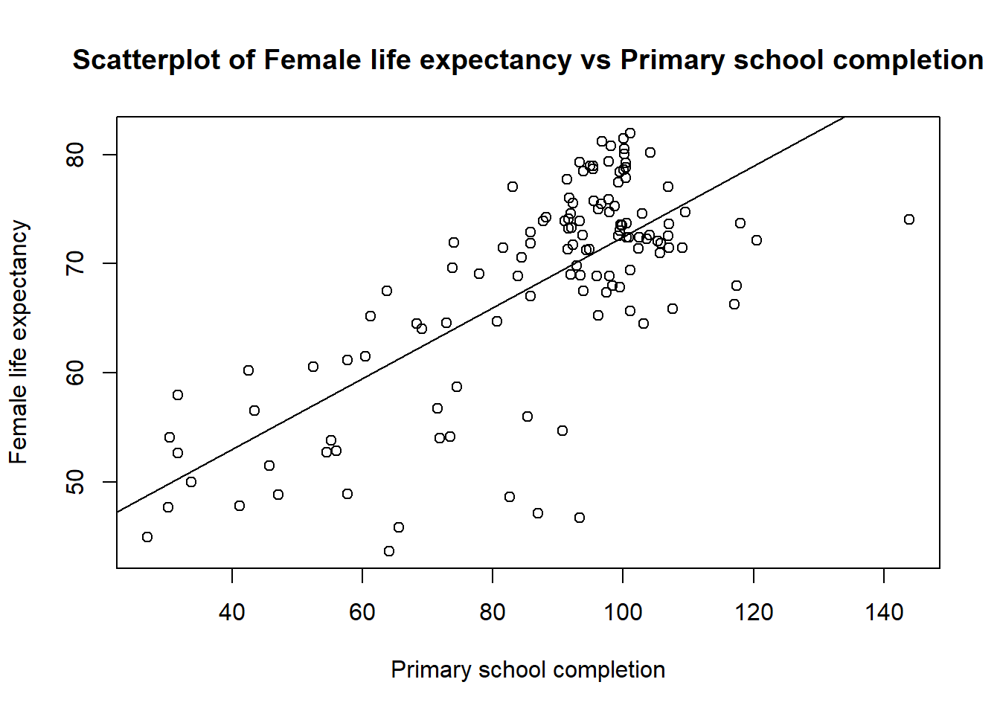

What you will learn:
The goal of this exercise is to become familiar with how to perform bivariate analysis (co-variation and regression) in R and to store the residuals from the regression analysis for later use in ArcGIS.
Note: this exercise must be done to do the next exercise (Exercise 6) which is a GIS exercise.
We have to work through some steps before using the dataset for the analysis that follows.
First we will only take the variables we are interested in. That is the third line of code here. Then we will get rid of the missing values. We can do that using the function ´complete.cases()´.
To create a scatterplot (i.e. a point cloud) in R you can use the function plot(). Firsts arguments of the function are the variables you want to vizualise and the other arguments are for aesthetics (title of the axis, colors etc.)
What is the name of your dependant and independant variables? Justify the answer.
plot(data$LifeExp05 ~ data$PrimComp05,
main = 'Scatterplot of Female life expectancy vs Primary school completion',
ylab = 'Female life expectancy',
xlab = 'Primary school completion')
Look carefully at the scatter plot:
In addition to a scatter plot, we want a measure of the relationship (correlation) between the two variables. One possible solution is to compute the Pearson’s correlation coefficient, abbreviated Pearson’s r.
\(\LARGE r=\frac{Cov(X,Y)}{\sigma_{X} \sigma_{Y}}\)
In R you do not need to compute the formula, there is already a built in function ´cor()´:
cor(data$LifeExp05, data$PrimComp05, use = 'complete.obs') # We specify that we want the 'pearson' correlation as there are multiple correlation function.## [1] 0.7212422Note: do not forget that if you have missing data the function will return NA. Be sure to include the argument use = ‘complete.obs’. See ?cor for more details
There is no objective answers to what is high correlation, but traditionally we consider a r > 0.7 as strong correlation. The correlation coefficient for “my” variables is equal to 0.721.
What is the value of the Pearson’s r between your variables? What does this mean? Pearson’s correlation coefficient is the best known indicator of correlation, why is it right of us to use it with the data we have? What is the value of the correlation coefficient of your model and what does it say about your model?
Usually, in a scatterplot we want to visualize the dependant variable function of the independant one. The dependent is the variable that is affected - in our case it is Life expectancy. The independent is the variable that affects the dependent (in our case Primary school completion rate).
Which way does the impact for their Variables 1 and 2 go? Maybe the influence goes both ways? Feel free to discuss this with a fellow student.
In a scatter plot, the dependent variable should be shown along the Y-axis and independent variable along the X-axis.
To show the relationship between the dependant and the independant variable we usually draw a regression line. We first need to fit a linear model with the function lm(). We can then draw the line as follow:
# Fit the model // we store the result of the linear regression in the object "model"
model <- lm(data$LifeExp05 ~ data$PrimComp05)
# You can then visualize the model output
summary(model)##
## Call:
## lm(formula = data$LifeExp05 ~ data$PrimComp05)
##
## Residuals:
## Min 1Q Median 3Q Max
## -23.547 -3.366 1.177 5.043 10.099
##
## Coefficients:
## Estimate Std. Error t value Pr(>|t|)
## (Intercept) 40.02012 2.51091 15.94 <2e-16 ***
## data$PrimComp05 0.32432 0.02797 11.60 <2e-16 ***
## ---
## Signif. codes: 0 '***' 0.001 '**' 0.01 '*' 0.05 '.' 0.1 ' ' 1
##
## Residual standard error: 6.747 on 124 degrees of freedom
## Multiple R-squared: 0.5202, Adjusted R-squared: 0.5163
## F-statistic: 134.4 on 1 and 124 DF, p-value: < 2.2e-16# Draw the plot showing the data
plot(data$LifeExp05 ~ data$PrimComp05,
main = 'Scatterplot of Female life expectancy vs Primary school completion',
ylab = 'Female life expectancy',
xlab = 'Primary school completion')
# Show the regression line
abline(model, add = TRUE)## Warning in int_abline(a = a, b = b, h = h, v = v, untf = untf, ...): "add" is
## not a graphical parameter In the summary of your model you will also find the R2.
What is the R2 for your model? Explain what this means for your model. R’s summary function produces two coefficients of determination - what is the difference between them?
Now that we have fitted the linear model to the data we can extract the residuals. You will use the residuals in the next exercise, which is a GIS exercise. It should also be noted that this type of analysis has several prerequisites that we will disregard at this time (model checking etc.).
We can create a new column in the dataset called res where we extract the model residuals. One issue you might encounter is that there might be a mismatch in the number of residuals and in the number of rows in your dataset. Under the hood, the function lm() remove all missing values from the variables you are using to fit your linear regression.
This can easily be fixed by removing the rows with missing values for your variables. This can be done by using the function complete.cases().
# Note that you need to replace the name of the variables with YOUR variables
data <- data[complete.cases(data$LifeExp05, data$PrimComp05), ]
# I then create a column residual where I store the residual values
data$res <- model$residualsThe observations that are far from expected value (with a high and low residual values) are called outliers.
You can see which countries have high and low residuals values by opening the dataset by clicking on it or by typing View(data) in R.
Look at the scatter plot you made in point 2 and the RES_1 column in the data file - are there any countries that are far away from the others? What countries are these? A hypothesis test is a statistical test method of an assumption in one or more populations. Before testing the hypothesis, one must formulate a null hypothesis (H0) and an alternative hypothesis (HA). H0 is conservative and suggests that there is no correlation between the variables in the model. HA assumes that there is a connection between the variables. If we assume that the significance level is (α) = 0.05, will we then be able to reject the null hypothesis? What does this mean for your model?
What is the value of the constant? What does that mean? What is the equation for your linear model? Write the equation and mention what the constant and the regression coefficient are, as well as the relevance / areas of use of these values
You will save your dataset as a .CSV file for the next exercise. For that, you can simply use the write.csv() function as follow:
write.csv(data, "PATH_TO_YOUR_FOLDER/data.csv")| Points | Criteria |
|---|---|
| 2 points | The two scatterplot are included in the hand-in |
| 1 points | In the secund scatterplot, the regression line and the points have different colors |
| 1 points | The figure captions describe well what the figures shows |
| 1 points | Format pdf and as one file (max 3 pages), include your name and consistent use of language |
| 2 points | Question 1 |
| 2 points | Question 2 |
| 2 points | Quesrion 3 |
| 2 points | Question 4 |
| 2 points | Question 5 |